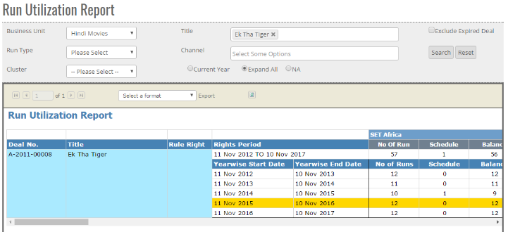


	<section>
		<article>
			<h2>Run Utilization Report<span></span></h2>
			<div>
				<p></p>

				<p>This report is helpful in checking scheduled runs against user allocated runs. Title wise and channel wise runs will be shown.</p>

				<div class="triangle-border top">				
					
				</div>

				<p>It has following search filters:</p>

				<p><b>Business Unit</b> - User can select desired business unit for which they want to see title run utilization.</p>

				<p><b>Title</b> - Single/Multiple select field where user can select desired title based on business unit selection.</p>

				<p><b>Run Type</b> - It can set as either be limited or unlimited.</p>

				<p><b>Channel</b> - If user wants to include only particular channel in report, this can be selected.</p>

				<p><b>Current Year</b> - Selecting this option will only show record which falls into current year. As can be seen in above screenshot, the record with yellow background will only be shown when this option is selected.</p>

				<p><b>Expand All</b> - This will bifurcate the whole right period and show full yearwise bifurcation as shown above.</p>

				<p><b>NA</b> - This will only show overall view of the utilization against title.</p>

				<p><b>Exclude Expired Deals</b> - By default, expired deals are also included in report. If user wants to exclude them, click on the checkbox.</p>

				<p><b>Search</b> - It will search the records as per selected criteria.</p>

				<p><b>Reset</b> - It will reset all the user input.</p>
				
			</div>
		</article>
	</section>